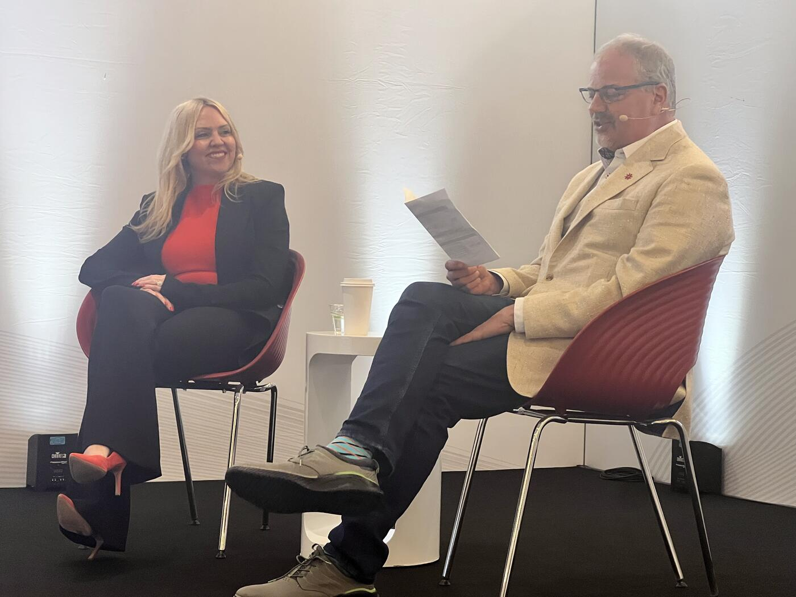

Mastercard Canada on Leadership, AI, Stablecoins, and the Future of Payments
At the Payments Canada Summit, one of the most candid conversations of the event took place during an "Idea Exchange" session featuring Erin Elofson, President of Mastercard Canada, in discussion with Shawn Van Raay, Chief Technology and Operations Officer of Payments Canada.
The session moved beyond product announcements and focused instead on leadership under uncertainty, the realities of innovation fatigue, responsible AI adoption, talent burnout, and the growing role of stablecoins in Canada's payment ecosystem.
Elofson repeatedly returned to a central theme: in an environment shaped by volatility, noise, and rapid technological change, leaders must remain grounded in customer needs rather than chasing hype.
"We're all dealing with a certain amount of ambiguity," she said. "Nobody has a perfect blueprint for what to do amid so much change all the time."
Leadership in an Era of Constant Change

Asked about the qualities that define successful leaders today, Elofson emphasized the importance of distinguishing "real signals instead of noise."
"There's so many headlines, and there's so much fear-mongering in the press," she said. "Somewhere in all of that, we need to focus, look at what the data is telling us about what our customers want and need in this moment."
She argued that leadership today requires both courage and agility, warning against becoming "paralyzed by the unknown."
"I think the worst thing we can do right now is innovate for the sake of innovation versus really getting super focused on what our customers need right now."
The conversation then turned toward lessons learned from previous technology cycles, particularly around privacy, security, and trust. Reflecting on the broader industry's experience over the past two decades, Van Raay noted that companies now understand "it's really hard to build security into a problem after the fact."
Elofson agreed that this generation of technology leaders carries scars and wisdom from earlier waves of innovation.
"We're wise, we're weathered from what it means to innovate without thinking through all the consequences of that innovation," she said. "It's very important that we design responsibly at the beginning, at inception."
When to Move First — and When Not To
One of the more philosophical moments of the discussion centered on how organizations decide whether to lead aggressively or remain measured and disciplined.
Elofson framed the decision around a simple question: "Where do we have the right to win?"
She explained that Mastercard Canada internally analyzed its capabilities against areas where it could genuinely create differentiated value for customers.
"That's where you want to be first," she said. "Where you have truly market-leading technology, and a real opportunity for your customers to do something with you that's different."
At the same time, she cautioned against overextending organizations by trying to pursue every opportunity simultaneously.
"We are all dealing with finite hours, finite time, finite mental energy," she said. "This obsession with focus — but focus on where it matters most for your customer — is how I try to think about it every day."
"If you try to do everything, you probably won't create differentiation for your business."
AI, Efficiency, and Human Time
Artificial intelligence emerged as another major theme throughout the session.
While much public discourse around AI focuses on job displacement, Elofson struck a notably optimistic tone, arguing that AI should primarily be viewed as a tool for improving quality of life and freeing up human capacity.
"I try to block out the lengthy headlines about how we're going to get rid of so many jobs," she said.
Instead, she framed AI as an opportunity to eliminate low-value friction in everyday experiences. "There are probably still many tasks that you wish you could do better or that you wish you didn't have to do to free up time to do higher value things in your life."
For Elofson, the future of payments is closely tied to this idea of invisible efficiency.
"Consumers expect super seamless personalized experiences so that they can have time in their lives to do higher value things."
She also highlighted the untapped opportunity in B2B payments modernization, especially for small businesses.
"There is this incredible opportunity to modernize B2B payments," she said. "What that actually means is completely unlocking productivity for small businesses who are still spending a lot of time trying to slowly and manually manage their books."
Optimism About Canada's Future
Toward the end of the conversation, Elofson shifted to a more personal reflection on Canada's trajectory amid global uncertainty.
"I believe that the world will be a better place in a year," she said. "And I'm thankful every day that I get to be in this country and raise my family in this country."
Rather than focusing on resilience alone, she said she hopes Canada moves into a period of renewed confidence and ambition. "I'd like to believe that in a year, we'll be thinking less about surviving and more about thriving."
She added that Canada's future success could emerge directly from the pressures and challenges it is currently navigating. "The ideas of Canada winning will be more on the foundation of Canada actually winning on the basis of what we've been through and on the basis of all of our unique strengths."
The Human Side of Growth
During the audience Q&A, a Mastercard employee asked what challenge currently keeps Elofson up at night.
Her answer was immediate and notably personal.
"We're very lean. We have a lot of open jobs right now," she said. "And I'm worried about how exhausted my team is."
Elofson described Mastercard Canada as "such a values-driven organization," but acknowledged that the pace of innovation and growth across the payments industry is putting intense pressure on teams.
"We ask a lot of people," she said. "Everybody is doing more with less."
She explained that her immediate priority after leaving the summit would be accelerating recruitment efforts to protect team wellbeing.
"How do we bring the right talent in so they can enjoy more of what we have to offer," she asked, "so that my amazingly talented team can get a better work-life balance back and feel a little bit of life back?"
Van Raay echoed the concern, noting that the payments industry's optimism and momentum can naturally create cultures prone to overwork.
Mastercard's Stablecoin Ambitions
The session concluded with a question about stablecoins following recent announcements involving Wealthsimple and Visa.
While careful not to disclose specific plans, Elofson confirmed that Mastercard is actively investing in stablecoin infrastructure and digital money movement capabilities.
"We're very, very invested in stablecoin enablement and innovative money movement," she said.
She pointed to Mastercard's recent acquisition of a company called PBSK, describing it as infrastructure designed to support "the on and off-ramping of stablecoins."
According to Elofson, Mastercard is already in active discussions across the ecosystem regarding future applications. "There are tons of active conversations in the ecosystem about this, about agentic commerce," she said.
Importantly, she emphasized that Mastercard's focus remains tied to practical outcomes rather than experimentation alone. "For us, it's about producing outcomes with real value here in Canada."
Key Takeaways
- Leadership rule: "Real signals instead of noise." Don't innovate for innovation's sake.
- Strategy question: "Where do we have the right to win?" — and stay focused there.
- AI framing: tool for invisible efficiency, not job replacement; big B2B opportunity for small business productivity.
- Quote: "I'd like to believe that in a year, we'll be thinking less about surviving and more about thriving."
- Candid moment: Mastercard Canada is very lean, with many open roles — recruitment is the top priority.
- Confirmed: Mastercard's acquisition of PBSK powers stablecoin on/off-ramping. Active conversations on agentic commerce underway.